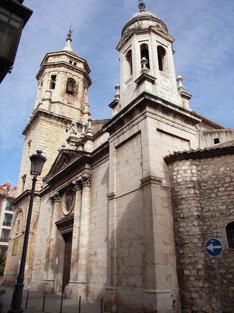

La Basílica-Santuario de Nuestra Señora de la Capilla y Sacra Iglesia Parroquial de San Ildefonso es un templo cristiano católico de Jaén. Fue erigido en 1248 en el arrabal San Ildefonso, creado tras la ampliación del recinto amurallado de la ciudad. Fue consagrado a San Ildefonso de Toledo por encontrarse en aquel momento la iglesia de Jaén dependiente del arzobispado de Toledo. Se sitúa en la plaza homónima, que se halla presidida por una escultura dedicada a la Inmaculada Concepción de María, labrada en piedra por Amadeo Ruiz Olmos con motivo de la remodelación de la plaza en 1957. A raíz del "Descenso de la Virgen" en 1430, este templo adquirió una gran importancia y se convirtió en santuario y, posteriormente, en basílica menor, de la patrona de la ciudad.
En esta iglesia se hallan sepultados los restos del arquitecto y cantero Andrés de Vandelvira, mentor de las catedrales de Jaén y Baeza, fallecido en 1575.
Con la edificación, en un antiguo arrabal extramuros de la ciudad árabe, del barrio de San Ildefonso, se construye una pequeña capilla en el corazón del nuevo barrio. Su primer dato histórico es de 1248, época de la que datan sus muros más antiguos, norte y este. Se estima que se fundó como parroquia en el siglo XIII, constando como tal en 1400, era una parroquia pobre de grandes dimensiones, aunque más reducidas que el templo actual, puesto que carecía de las naves laterales, de la portada principal y de la nave del descenso, tras el tabernáculo.
Tras el descenso de la Virgen a la ciudad en 1430, la pequeña capilla adquiere gran importancia, convirtiéndose en el Santuario donde se rinde culto a la Virgen, con la advocación de Capilla. Desde este momento la pequeña capilla comienza a ampliarse con el impulso, primero, del obispo Alonso Suárez de la Fuente del Sauce y hasta las últimas obras en el siglo XX. Todas las obras de ampliación y reformas, tan dilatadas en el tiempo, configuran un templo donde se mezclan estilos que lo convierten en un gran templo, con el empaque de una catedral.
El 9 de junio de 2010 fue declarada Basílica menor por el papa Benedicto XVI, celebrándose el día 14 de noviembre una misa de acción de gracias.
El exterior recuerda a una fortaleza, debido a la presencia de varios contrafuertes semicirculares, en forma de torreón, situados en el muro norte. En este muro, se encuentra un mosaico realizado a mediados del siglo XX. En el aparece la virgen de Capilla bajo un tejado del que cuelgan de sus laterales sendos faroles. Al pie del mosaico, una piedra contiene la inscripción:
Junio de 1930. Recuerdo del V Centenario del Descenso de la Virgen María a la Capilla de...
... San Ildefonso en la noche del 10 al 11 de junio de 1430 y de la coronación de su sagrada imagen.
Continuando la fachada se abren las Rejas de la Capilla que permiten ver a la Virgen desde la calle en todo momento.
El exterior recuerda a una fortaleza, debido a la presencia de varios contrafuertes semicirculares, en forma de torreón, situados en el muro norte. En este muro, se encuentra un mosaico realizado a mediados del siglo XX. En el aparece la virgen de Capilla bajo un tejado del que cuelgan de sus laterales sendos faroles. Al pie del mosaico, una piedra contiene la inscripción: Junio de 1930. Recuerdo del V Centenario del Descenso de la Virgen María a la Capilla de San Ildefonso en la noche del 10 al 11 de junio de 1430 y de la coronación de su sagrada imagen. Continuando la fachada se abren las Rejas de la Capilla que permiten ver a la Virgen desde la calle en todo momento.
El interior es de estilo gótico final, con planta de salón con tres naves de pilares compuestos que sustentan arcos apuntados, sobre los que cubren bóvedas nervadas, siguiendo las líneas del gótico tardío. La puerta de la antesacristía fue realizada en 1726 por J. Delgado y A. López. Es de madera con talla de estrellas poligonales de inspiración mudéjar. Sobre la puerta se abre una pequeña tribuna. La antesacristía y la sacristía presentan bóvedas de yesería labradas, en estas salas se guardan cuadros, tres sitiales de coro barrocos y objetos de culto de gran valor. Al pie del templo se encuentra un óleo de grandes proporciones de San Cristóbal cruzando un río con el Niño Jesús a cuestas mientras se apoya en una palmera. Es obra de José García Espantaleón en 1813.
En el santuario se encuentra la cofradía de la patrona, que da culto a la misma, así como otras cinco cofradías que tienen su sede canónica en la parroquia, destacando las tres que procesionan en Semana Santa.
| Precio | |
|---|---|
| Entrada General | Gratuita |
| Horario | |
|---|---|
| Lunes a Jueves | 08:00-12:00 / 18:00-21:30 |
| Viernes | 08:30-11:00 / 18:00-21:30 |
| Sábados | 09:00-13:00 / 19:00-21:30 |
| Domingos | 08:30-14:00 / 19:00-21:30 |